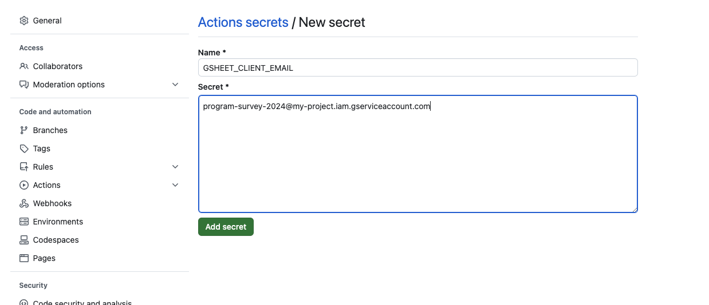
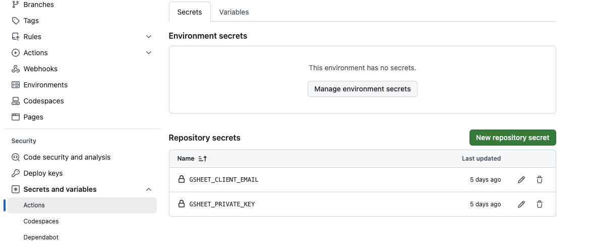

GitHub Actions + Google Sheets
How do you get access to Google Sheets data in R while inside a non-interactive GitHub Actions environment?
You need to give your workflow permission. Easier said than done!
Everything associated with this tutorial can be found at avahoffman/GHA_and_googlesheets.
Step 1: Make a service account
Go to https://console.cloud.google.com/apis/credentials.
- If you’re using a specific Gmail account to manage Google Cloud, make sure you’re logged in.
- If your browser doesn’t redirect you to something like “https://console.cloud.google.com/apis/credentials?project=my-project”, you might need to make a project first. You can make a limited number of projects for free.
Click on “CREATE CREDENTIALS” and select “Service account”.
- A service account is a special kind of account typically used by an application, rather than a person.
- Caution: Service account keys are a security risk if not managed correctly!
- Fill in details. Be specific about the program and use. Click on “CREATE AND CONTINUE”.
Leave “Grant this service account access to project” and “Grant users access to this service account” as is by clicking “CONTINUE” and “DONE”
- You will be taken back to the credentials page. You’ll see your new service account that you created, and an email that looks something like “program-survey-2024@my-project.iam.gserviceaccount.com”.
Click on the service account (something like “program-survey-2024@my-project.iam.gserviceaccount.com”).
Click on “KEYS” > “ADD KEY” > “Create new key”.
- Select “JSON” and click “CREATE”. This stores the key in your downloads. Service account keys could pose a security risk if compromised. Keep it safe!
Step 2: Set up the secret on GitHub
On GitHub, find or create the repository where you want to run a GitHub Action (GHA).
Go to “Settings” > “Secrets and variables” > “Actions”
Click on “New repository secret”
Fill in the name:
GSHEET_CLIENT_EMAIL. Type in the name of the email generated above. It will end iniam.gserviceaccount.com. Click “Add secret”.

Create another secret. Fill in the name:
GSHEET_PRIVATE_KEY.Go to your
.jsonkey you just downloaded. Open it up and locate the fieldprivate_key. It will look something like this.
- You’ll need to replace all the
\nwith line breaks. You can do this manually or in R usingmessage(). Paste this as your secret.
- Click “Add secret”. Your secrets are now ready to use.

Step 3: Give the service account permission
- Share the Google Sheet you’ll be pulling from with your service account. Use the email that ends in “iam.gserviceaccount.com”
- Note the Sheet ID. This can be found between
/d/and/edit?.
Step 4: Set up GHA
Edit/Create a workflow that leverages these credentials. You might create something like this file, also shown below. This workflow leverages the existing GHA jroehl/gsheet.action@v2.1.1. It “grabs” the data.
- Instead of
'1QNBCCk4eIsSLw9I_KdNtWiBYEKz-mHSzLVYLYlN6c9U', provide the sheet ID you are interested in. - Instead of
"Sheet1", provide the correct worksheet name. - Supply the correct range of cells.
name: Run Google Sheet Analysis
on: workflow_dispatch
jobs:
run-analysis:
name: Run Google Sheet Analysis
runs-on: ubuntu-latest
container:
# Use a container that has most dependencies installed.
# It doesn't have to be this one
image: 'jhudsl/base_ottr:latest'
steps:
# Get files from the repository
- name: checkout
uses: actions/checkout@v4
- name: get data
id: 'get_sheet'
uses: jroehl/gsheet.action@v2.1.1
with:
spreadsheetId: '1QNBCCk4eIsSLw9I_KdNtWiBYEKz-mHSzLVYLYlN6c9U' # Specific Google Sheet URL
commands: | # list of commands, specified as a valid JSON string
[
{ "command": "getWorksheet", "args": { "worksheetTitle": "Sheet1" }},
{ "command": "getData", "args": { "range": "'Sheet1'!A:B" } }
]
env:
GSHEET_CLIENT_EMAIL: ${{ secrets.GSHEET_CLIENT_EMAIL }}
GSHEET_PRIVATE_KEY: ${{ secrets.GSHEET_PRIVATE_KEY }}
# Run the analysis
- name: Run render script
env:
# the output of the action above!
RESULTS: ${{ steps.get_sheet.outputs.results }}
run: |
Rscript --vanilla "R/render.R" --data_in "$RESULTS"Step 5: Set up your analysis
You’ll want to leverage the data inside an R script. You might create something like this file, also shown below.
- The main line that does this is in the workflow above is
Rscript --vanilla "R/render.R" --data_in "$RESULTS" - The script below takes the
$RESULTSand creates a tibbledf. - Ultimately, the contents of your R analysis are up to you!
- Be careful not to print any sensitive data in your workflow!
install.packages("jsonlite", repos = "https://cloud.r-project.org")
library(optparse) # make_option OptionParser parse_args
library(jsonlite) # fromJSON
# --------- Get the output from GHA ---------
# Look for the data_in argument
option_list <- list(
optparse::make_option(
c("--data_in"),
type = "character",
default = NULL,
help = "Sheet Results (json)",
)
)
# Read the results provided as command line argument
opt_parser <- optparse::OptionParser(option_list = option_list)
opt <- optparse::parse_args(opt_parser)
jsonResults <- opt$data_in
# --------- Interpret the JSON data ---------
# Pull the data itself from the API results
df <- fromJSON(jsonResults)
df <- df$results$result$formatted[[2]]
# Repair if you have column names on your spreadsheet
colnames(df) <- df[1, ] # colnames taken from first row of data
df <- df[-1, ] # remove the first row of data (original column names)
df <- tibble::as_tibble(df)
# --------- Any analysis you want to do ---------
# --------- Don't print sensitive data!! --------
df$`How would you rate our platform?` <- as.numeric(df$`How would you rate our platform?`)
print(mean(df$`How would you rate our platform?`))
# --------- Render web pages from Rmd docs ---------
rmarkdown::render_site(
input = "pages",
envir = new.env(parent = globalenv()) # enable use of 'df' inside the Rmd being rendered
) Step 6+: Test the workflow
- It’s important to check if things are set up correctly. Navigate to your “Actions” tab of your workflow and launch your GHA workflow, if it hasn’t launched automatically.
- Click through to the completed workflow. From the output below, we can see the mean I requested in
render.Rwas successfully calculated!